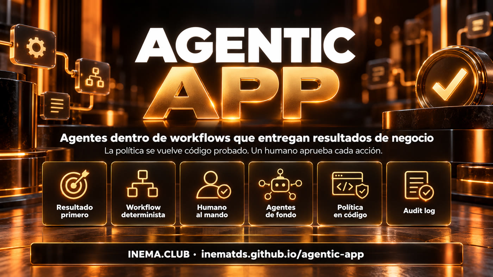
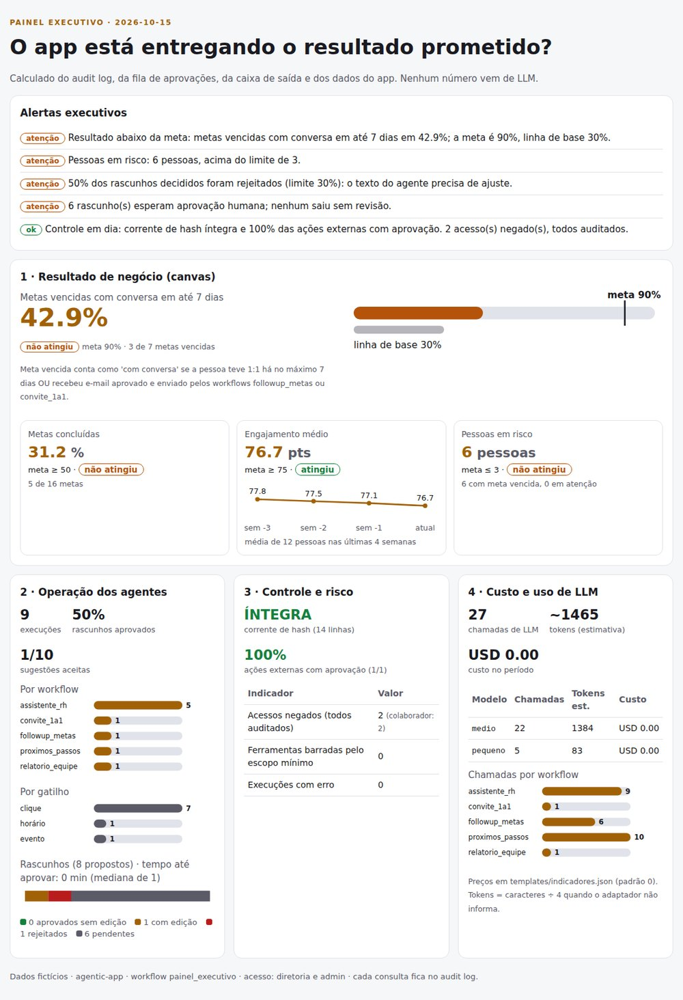
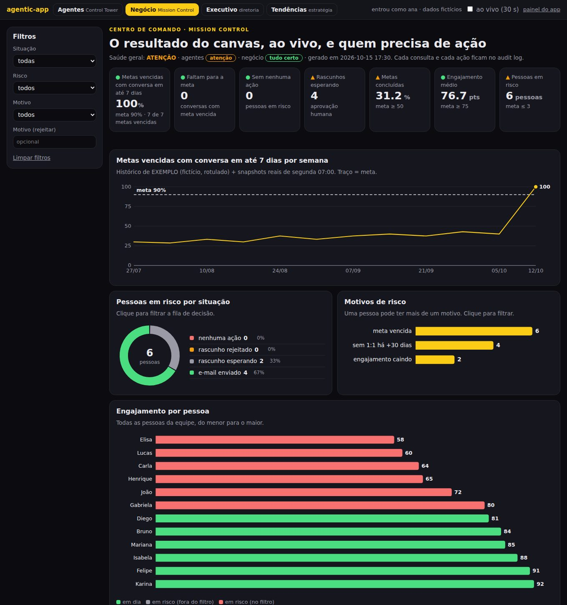

El agente es una herramienta. El centro es el resultado.
Arma apps de IA en las que el LLM corre dentro de un workflow fijo, una persona aprueba cada acción y la política de la empresa se vuelve código probado.
agentic-app es un framework en Python para que las empresas construyan apps de IA a partir de un resultado de negocio, y no a partir del agente. Sirve para quien necesita poner IA dentro de un proceso real (RR. HH., gestión de personas, atención) con control: el LLM corre dentro de un workflow fijo, toda acción externa espera aprobación humana, las reglas con números se vuelven código probado y cada ejecución queda registrada. Incluye una app de ejemplo completa (coaching para gerentes) y funciona solo con Python 3 instalado, sin clave y sin internet.
Qué es
Una app en torno a una decisión, no un chat en torno a todo
La pregunta de partida no es "¿qué agente vamos a crear?". Es "¿quién decide qué, y cómo medimos si mejoró?". El agente entra después, como una pieza del proceso.

🧱 Workflow antes que agente
Cada uso de LLM es un nodo entre otros cuatro: contexto, código, condición y formato. Misma entrada, misma salida.
✋ Nadie envía por su cuenta
El workflow solo propone. El correo queda en la cola hasta que la persona lo lea, edite y apruebe. Todo va al audit log.
📏 Una regla con número es código
El manual de vacaciones se vuelve funciones con entrada estricta y 13 pruebas de política. Si cambia un número, una prueba se rompe.
Los 9 pilares
El checklist que implementa el framework
Cada pilar tiene un archivo y al menos una prueba. Usa la lista para revisar cualquier app de IA de tu empresa, aunque no uses este código.
1
Resultado de negocio primero
Canvas con persona usuaria, decisión y métrica de éxito antes de pensar en el agente.
templates/canvas-resultado.md
2
LLM dentro de un workflow
Nodos contexto → código → condición → LLM → formato. El modelo se elige por la tarea, no por gusto.
workflow.py · config.py
3
La pantalla llama al workflow
El botón del panel envía la entrada al workflow y el resultado vuelve en la propia pantalla, como borrador editable.
painel.html · serve.py
4
Humano al mando
Toda acción externa pasa por revisión, edición y aprobación. Los campos sensibles, como el destinatario, quedan bloqueados.
acoes.py
5
Agentes de fondo
Observan los datos (meta vencida, 1:1 atrasado, compromiso en caída) y sugieren próximos pasos con un botón de ejecutar.
workflow proximos_passos
6
La política se vuelve código, no RAG
Clasifica la pregunta, carga solo la política correcta y le da al agente solo las herramientas de esa política. La búsqueda queda para preguntas abiertas.
policies/ferias.py
7
Seguridad por workflow
Roles que pueden ejecutar, identidad de servicio con alcance mínimo y audit log con hash encadenado.
seguranca.py
8
Disparadores más allá del clic
Manual, programado (lunes 08:00) y por evento (correo recibido), declarados en el propio JSON del workflow.
gatilhos.py
9
Salida visual
Informe en HTML y PDF, generado por workflow, en lugar de una pared de texto.
relatorio.py
Cómo funciona
Un camino fijo, con el LLM en una sola caja
El motor verifica quién lo pidió, asume la identidad del workflow, valida la entrada y corre los nodos en orden. La salida es JSON validado. Las acciones se vuelven propuestas. Una línea de auditoría por ejecución.
Disparador→¿El rol puede ejecutar?→Contexto→Código→Condición→LLM→Formato + esquema→Propuesta en la cola→La persona aprueba→Ejecuta + audit
Asistente de RR. HH., nodo a nodo
perfil (contexto, identidad svc-rh) → categoría (el LLM clasifica: vacaciones, licencia parental u otro) → condición → datos (el código extrae los números de la pregunta) → agente (el LLM elige entre las herramientas SOLO de esa política) → explicación (código) → formato.
Seguimiento de metas, nodo a nodo
equipo (contexto) → metas vencidas (código) → ¿hay pendientes? (condición) → borradores (el LLM redacta uno por persona) → el formato valida y propone 6 correos. Ninguno sale antes de la aprobación.
Requisitos previos
Solo Python
Nada que instalar con pip. Ninguna clave de API. Las pruebas bloquean la red a propósito.
Python 3.10 o más reciente
Linux, Mac o Windows.
# verificarpython3 --version
git
Para descargar el repositorio.
git --version
Ollama (opcional)
Solo si quieres cambiar el LLM falso por un modelo local.
# opcionalollama list
Guía de uso · paso a paso
Del clon a tu primera app
Los cuatro primeros pasos ejecutan el ejemplo. Los demás muestran lo que cambias para tu empresa. La guía completa, con checklist de implementación, está en docs/PASSO-A-PASSO.md (en portugués).
1
Descarga y ejecuta las pruebas
104 checks, sin red. La última línea tiene que ser OK.
Ejecuta los 5 workflows: RBAC denegando, borradores, aprobación con edición, asistente de RR. HH., programado de lunes 08:00, evento de correo recibido e informe.
python3 -m agentic_app.demo
# genera saida/relatorio.html, saida/relatorio.pdf, saida/audit.jsonl
3
Abre el panel
Cambia de persona arriba (gerente, RR. HH., colaborador) y mira qué puede hacer cada rol.
python3 -m agentic_app.serve --porta 8765
# http://127.0.0.1:8765 (solo en tu máquina)
4
Comprueba que la política es código
El script cambia nueve números del manual, uno a la vez, y verifica que alguna prueba se rompa.
bash tests/prova_mutacao.sh # 9× "quebrou (bom)" → OK
5
Completa el canvas de resultado
Persona usuaria, decisión, costo de hoy y un número de éxito con plazo. Sin métrica, no empieces.
Contexto → código → condición → LLM → formato. La acción externa va en propor_acao, con los campos editables. Muévelo a la carpeta workflows/ de tu app solo después de registrar el contexto y la función que usa.
Quién ejecuta cada workflow, con qué cuenta de servicio actúa y quién aprueba lo que propone.
cat templates/permissoes.json
9
Cambia el LLM cuando el proceso esté listo
El falso se queda en las pruebas. Para un modelo local, una variable. Para otro proveedor, una subclase de LLM.
AGENTIC_LLM=ollama python3 -m agentic_app.demo
App de referencia
Coaching para gerentes: 12 personas, 5 workflows
Datos ficticios. La gerente ve al equipo, genera seguimientos para quienes no alcanzaron la meta, recibe sugerencias del agente de fondo y responde dudas de vacaciones con la política codificada.
Panel: la situación de cada persona tiene etiqueta y color; los borradores y sugerencias aparecen en la propia pantalla.Informe generado por el workflow relatorio_equipe: 12 personas, 16 metas, 7 vencidas. También sale en PDF.
Componente
Workflow
Nodos
Quién ejecuta
Actúa como
Seguimiento de metas
followup_metas
6
gestor, sistema
svc-coaching
Próximos pasos
proximos_passos
6
sistema, gestor
svc-coaching
Invitación a 1:1
convite_1a1
4
gestor
svc-coaching
Asistente de RR. HH.
assistente_rh
10
colaborador, gestor, rh, sistema
svc-rh
Informe
relatorio_equipe
4
gestor, rh, sistema
svc-coaching
Panel ejecutivo · 1.1.0
La vista de la dirección: ¿está entregando, con seguridad y a qué costo?
El panel del gerente es la pantalla de trabajo. El panel ejecutivo le responde a quien patrocina la app, con números calculados del audit log, la cola de aprobación, la bandeja de salida y los datos de la app. Ningún número viene de un LLM.

Captura real de la demo: el 42,9% de las metas vencidas tuvo conversación en hasta 7 días (meta 90%, base 30%), 9 ejecuciones, 100% de las acciones externas con aprobación, 27 llamadas de LLM.
🎯 Resultado de negocio
La métrica del canvas contra la meta y la línea de base, con estado "alcanzó" o "no alcanzó". En la demo: metas concluidas 31,2%, compromiso medio 76,7 y 6 personas en riesgo.
⚙️ Operación de los agentes
Ejecuciones por workflow y por disparador (clic 7, horario 1, evento 1), borradores aprobados, editados y rechazados, tiempo hasta aprobar y sugerencias del agente de fondo aceptadas (1 de 10).
🛡️ Control y riesgo
Accesos negados por rol, herramientas bloqueadas por alcance mínimo, cadena de hash íntegra o rota (con la línea) y el % de acciones externas con aprobación, que tiene que ser 100%.
💰 Costo de LLM
Llamadas por workflow y por modelo (el FakeLLM cuenta igual), tokens estimados y costo según la tabla de templates/indicadores.json, que viene en cero.
🚨 Alertas por regla
De 3 a 5 frases cortas armadas por código, en el orden crítico → atención → ok. Una cadena rota o un e-mail sin aprobación suben al principio.
🔒 Solo dirección y admin
El panel es el workflow painel_executivo, con identidad de solo lectura. Colaborador y gerente reciben 403, y el intento se vuelve una línea workflow.negado en el audit.
La película, no la foto: ¿hacia dónde van los números?
El panel ejecutivo muestra si la app entrega ahora. El de tendencias usa el historial semanal para dar el ritmo de cada número, cuándo llega la meta (o que no llega en el trimestre) y qué está empeorando antes de volverse un problema.
📈 Ritmo y proyección
Regresión lineal simple sobre las semanas: "al ritmo actual, la meta se alcanza el DD/MM" o "no se alcanza hasta el fin del trimestre". Una meta ya alcanzada pero empeorando muestra la fecha en que se pierde.
⚠️ Señales anticipadas
Tres semanas seguidas en el sentido malo se vuelven alerta. En la demo: compromiso medio cayendo hace 8 semanas y 4 personas con 3 caídas seguidas (Carla, Henrique, Elisa, Lucas).
🔀 Escenarios "¿y si?"
Regla explícita en el código: cada 1:1 extra por semana cubre a una persona con meta vencida. Con 5 por semana, 42,9% pasa a 76,2% y la meta de 90% llega el 28/12/2026.
🗓️ Historial que se forma solo
El workflow snapshot_indicadores graba la foto de la semana cada lunes 07:00 en saida/historico.jsonl. Con menos de 4 semanas, el panel dice "historial insuficiente".
🔒 Estrategia, dirección y admin
Workflow painel_tendencias con identidad de solo lectura. El LLM solo hilvana la narrativa con frases ya calculadas; cambiar el LLM no cambia ningún número.
Captura real de la demo (12 semanas, historial de ejemplo rotulado): la cobertura sube 1,3 p.p. por semana y no llega a 90% hasta el 31/12/2026; el compromiso sale de la meta el 02/12/2026.
Centro de Comando · 1.3.0
Una pantalla para quien opera: qué hacen los agentes ahora y qué falta para la meta
El ejecutivo y las tendencias son para quien decide. El Centro de Comando es para quien sigue en vivo y actúa en el momento. Dos pestañas: Agentes (Agent Control Tower) y Negocio (Mission Control).
🛰️ Agent Control Tower
Semáforo por workflow (ok, atención, falla, pausado), última ejecución, próximo disparo agendado, cola de aprobación por antigüedad con SLA de 24 h, fallas y accesos negados, cadena del audit y últimos eventos.
🎛️ Acciones sobre los agentes
Pausar (el disparo queda en el audit y no corre; los otros agendados siguen), reanudar, ejecutar ahora, reejecutar y escalar una aprobación detenida. Solo el rol operacao y admin. Operación nunca aprueba ni envía.
🎯 Mission Control
La métrica del canvas contra la meta y cuántas conversaciones faltan (en la demo: 42,9%, faltan 4). Cola de decisión: quién está en riesgo, en qué estado está y la próxima acción, con botón para activar el agente, aprobar o rechazar.
🔒 Cada clic con tu rol
Un botón sin permiso aparece deshabilitado con el motivo, y el servidor vuelve a verificar. Toda acción y toda negativa van al audit. Reejecutar solo rehace lo que no exige guardar la entrada de la persona.
Pestaña Agentes en el layout 1.4.0 (8 semanas simuladas): tarjetas, filtros al costado, ejecuciones por día con la situación en color.

Pestaña Negocio: la métrica del canvas por semana contra la meta, personas por situación y motivos de riesgo.
Paneles · 1.4.0
Los cuatro paneles con el mismo patrón: primero la visión general, después el detalle
Agentes, Negocio, Ejecutivo y Tendencias usan ahora el layout de los paneles de BI: números grandes arriba, filtros al costado, gráficos en el medio y, abajo, el detalle con las acciones. Un clic en un gráfico filtra el resto de la página.
🧭 Una sola navegación
Una barra arriba lleva a los cuatro paneles. Cada uno mantiene su rol: quien no puede verlo recibe 403 y el intento queda en el audit.
🔎 Clic para detallar
Barra, día, porción o tarjeta se vuelven filtro (?workflow=…&situacao=falha). Los filtros activos aparecen como etiquetas; otro clic los quita. El enlace se puede guardar y compartir.
📊 SVG puro
Columnas, barras, donas y líneas dibujadas en Python, sin biblioteca ni CDN. Tooltip al pasar el mouse, leyenda cuando hay dos o más series, color de estado siempre con etiqueta.
🧪 8 semanas simuladas
python3 -m agentic_app.simular corre el motor real con reloj simulado (ficticio, siempre igual) para que los gráficos tengan qué mostrar.
La aplicación que usa la persona de negocio: pantalla, workflow fijo, política en código, aprobación y auditoría. Responde qué resultado gana la empresa.
La versión 1.0.0 es el núcleo completo con una app de referencia. Después llegaron el panel ejecutivo (1.1.0), el de tendencias (1.2.0), el Centro de Comando (1.3.0) y el layout común de BI en los cuatro paneles (1.4.0).
1.0.0
Núcleo + Coaching para gerentesMotor con 5 tipos de nodo, FakeLLM y Ollama local, cola de aprobación, roles e identidades, audit con hash, 3 tipos de disparador, política de vacaciones y licencia, informe HTML/PDF, panel web, 48 checks.
1.1.0
Panel ejecutivoResultado del canvas contra la meta, operación de los agentes, control y riesgo, costo de LLM y alertas por regla; rol dirección; HTML y PDF; 62 checks.
1.2.0
TendenciasHistorial semanal con foto automática, ritmo por regresión, proyección hasta la meta, señales anticipadas, comparación entre personas y escenarios "¿y si?"; rol estrategia; 75 checks.
1.3.0
Centro de ComandoAgent Control Tower (semáforo por workflow, cola por antigüedad con SLA, fallas, eventos) y Mission Control (métrica del canvas, cuánto falta, cola de decisión), con acciones: pausar, reanudar, ejecutar ahora, reejecutar, escalar, activar, aprobar; rol operación; 93 checks.
1.4.0
Visión general → detalle en los cuatro panelesLayout común de BI con una sola navegación, tarjetas, filtros al costado, gráficos SVG clicables y detalle con acciones; simulación de 8 semanas; foto semanal corregida; 104 checks.
Próximo
Más apps de referenciaOtros procesos usando el mismo motor, cada uno con su canvas, sus políticas y sus pruebas.
Después
Conectores de producciónEjemplos de ejecutor SMTP, inicio de sesión corporativo en el panel y lectura de base de datos en el nodo de contexto.